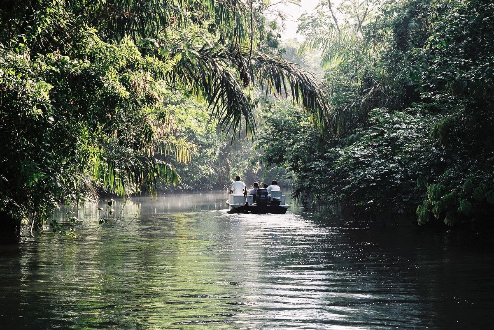

Inicio / Tortuguero

Canales, selva y tortugas
Tortuguero
Un pueblo al que solo se llega en barca, rodeado de canales. Monos, caimanes y, si hay suerte, tortugas desovando de noche en la playa.
20 - 22 agosto · Laguna Lodge
Actividades
Jue 20 agosto · 06:00
Traslado por los canales
Recogida en el hotel a las 06:00. A Tortuguero solo se puede llegar en barca: traslado en …
Vie 21 agosto · 08:30
Parque Nacional Tortuguero
Paseo en bote por los canales para observar monos, caimanes y fauna del parque. Por la tar…
Vie 21 agosto · 20:00
Tour de desove de tortugas
Salida nocturna guiada a la playa para ver a las tortugas desovar. Una de las experiencias…